Count: acute hepatitis B
A compact end-to-end Poisson workflow using five US states and annual surveillance counts from 2012 to 2023.
Know the data
The source case combines acute hepatitis B surveillance counts with socioeconomic and environmental indicators in five Appalachian states: Kentucky, Tennessee, North Carolina, Virginia, and West Virginia. The study period is 2012–2023. The source manual identifies CDC, ACS, and NOAA as data sources.
| File / field | Meaning |
|---|---|
| hbv_a5_space.xlsx | Original wide table: one row per state |
| Hepatitis-B-Ready-Panel.csv | Added panel: 60 rows, with values preserved |
| us_a5/us_a5.* | Five-state map component set |
| GEOID | State identifier: 21, 47, 37, 51, 54 in map order |
| YEAR | Calendar year, 2012 through 2023 in the ready panel |
| COUNT | Acute hepatitis B surveillance case count |
| PD | Population density |
| UNINS | Uninsured proportion |
| POV | Poverty proportion |
| PRECIP | Annual precipitation |
The five selected variables have no missing entries in the provided source data. The panel has 60 unique state–year observations (5 × 12). All response values are non-negative integers.
1. Convert the wide table
BSTVC Desktop expects a long table with one row per spatial unit and time point. Open Data Conversion, load hbv_a5_space.xlsx, and confirm five source rows. Select the following settings:
| Parameter | Value |
|---|---|
| ID columns | GEOID (optionally retain other invariant state attributes) |
| Time Sequence | 2012:2023 |
| New Time Column Name | YEAR |
| Number of Variables to Convert | 5 |
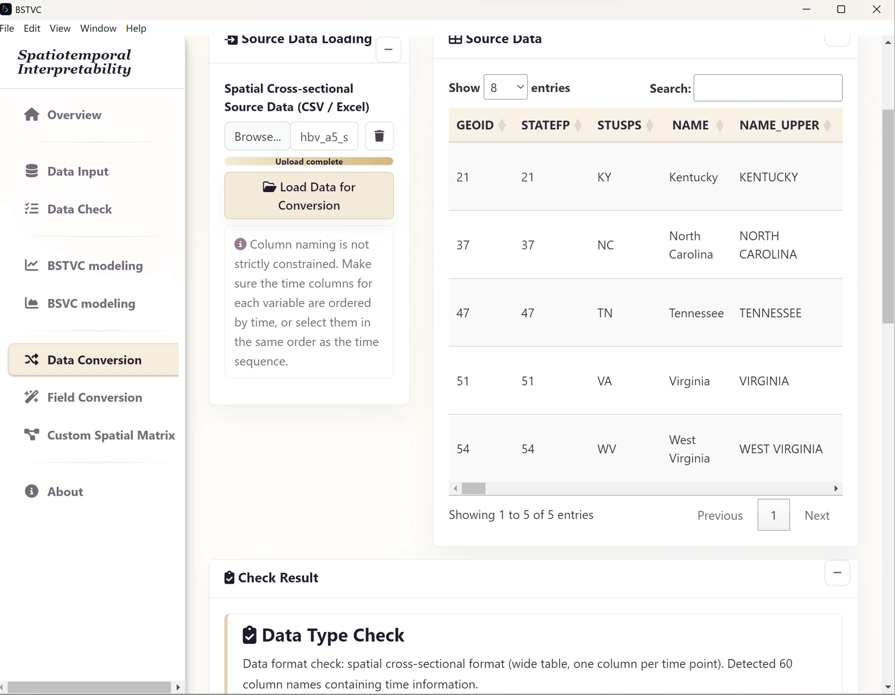
For each of the five variables, name the converted column and select the inclusive start–end range. Choose Select by Range; verify exactly 12 time columns in chronological order.
| New variable name | Start column | End column |
|---|---|---|
| COUNT | COUNT2012 | COUNT2023 |
| PD | PD2012 | PD2023 |
| UNINS | UNINS2012 | UNINS2023 |
| POV | POV2012 | POV2023 |
| PRECIP | PRECIP2012 | PRECIP2023 |
- After selecting all ranges, choose Start Conversion.
- Check for 60 rows with fields
GEOID, YEAR, COUNT, PD, UNINS, POV, PRECIP, plus any invariant fields you chose to retain. - Download the converted table and save it as
Hepatitis-B-Converted-Panel.xlsx.
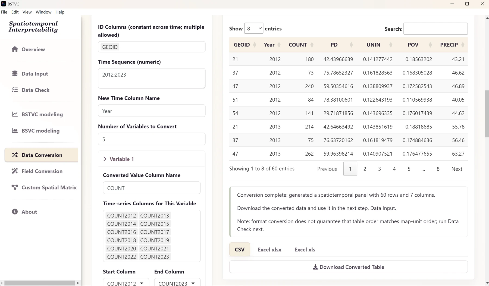
2. Import the panel and map
- Open Data Input and use the modeling table Browse control to select
Hepatitis-B-Ready-Panel.csv (or your saved converted panel). - In the map Browse control, select the complete
us_a5shapefile component set. - Leave the custom matrix input empty for the default neighborhood.
- Select Load and Validate Input.
- Review Data Table field properties, types, missing-value ratios, and raw preview. Then review Map field properties and the boundary preview.
Review COUNT as numeric counts and the four predictors as numeric variables. Confirm that all five GEOID values are present and match the map. The field is a spatial key, not a predictor. For a population-rate question, raw counts and rates are different targets: the documented example models counts and does not demonstrate an exposure offset control.
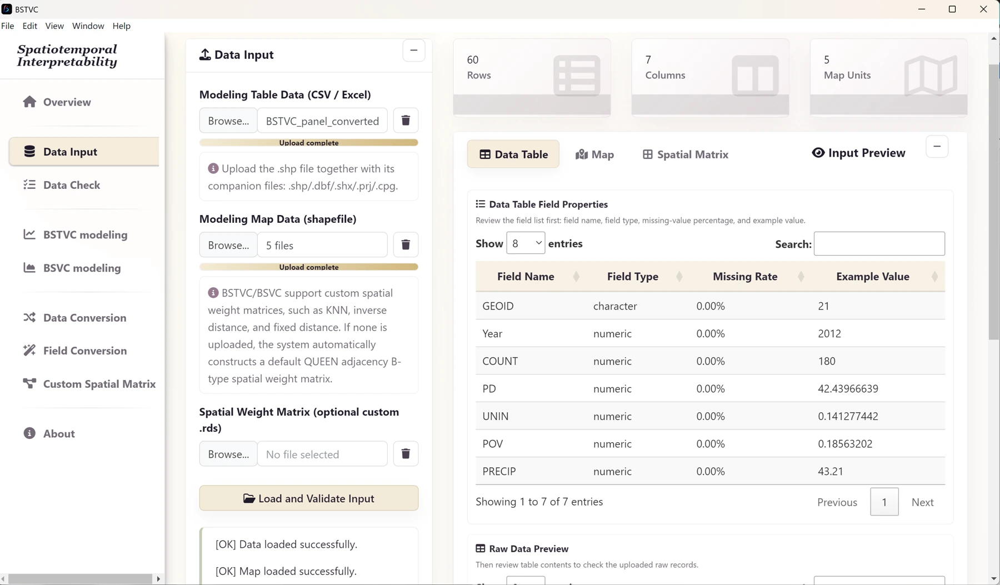
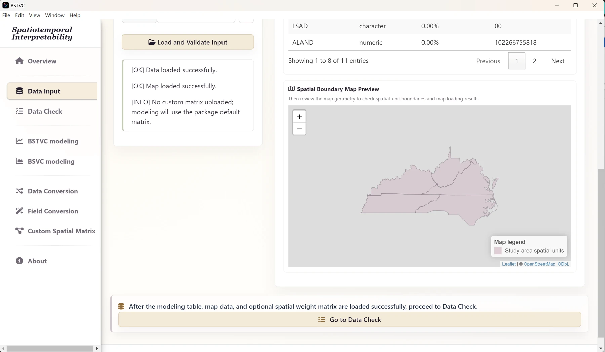
3. Check spatial order
- Open Data Check and select the BSTVC spatiotemporal panel check mode.
- Set Time Field to
YEARand Space Field toGEOID. - Select Run Check and read the log. Confirm the full set of map identifiers has matched.
- If the application reports automatic rearrangement, export the checked table for your records and use Checked Data during modeling. If it reports an already aligned order, use Raw Data.
The original workbook lists states in a different order from the map: the map order is KY, TN, NC, VA, WV. A reshape alone does not guarantee correct order. The added ready panel follows map order at each year, but verify the application’s check log in either route.
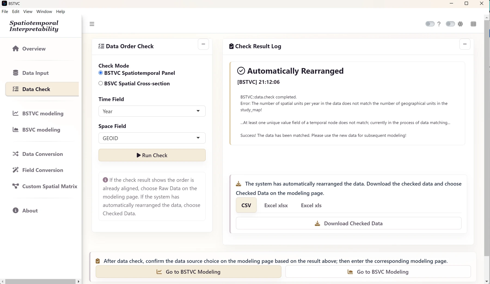
4. Configure and run the Poisson model
| Parameter | Choose |
|---|---|
| Response Variable Y | COUNT |
| Explanatory Variables X | PD, UNINS, POV, PRECIP |
| Response Type | Count (Poisson) |
| Time Field | YEAR |
| Space Field | GEOID |
| Data Source | Raw Data if already aligned; Checked Data if rearranged |
| Standardize X Variables | Yes for the demonstrated comparisons |
| Spatial weight matrix | Default QUEEN-B |
| Threads | 6 as the starting setting |
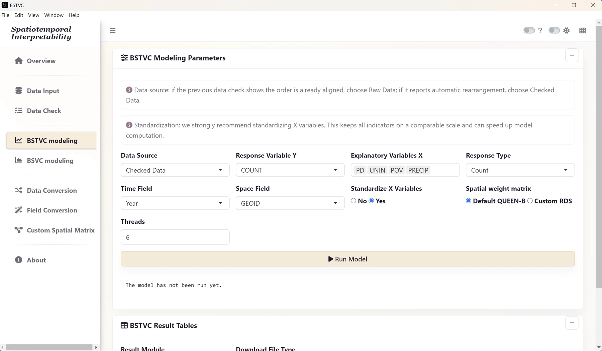
- Open BSTVC modeling and enter the settings listed above.
- Recheck the response family, time field, spatial field, and Data Source. Do not substitute IDs or time for explanatory variables.
- Select Run Model once and wait for the progress message to finish.
- When the result table appears, select Download All Tables. Save the workbook as
hbv_all_result.xlsxin your case output folder. - Keep the checked input table, map, chosen variables, neighborhood, thread setting, software version, and any error log with that workbook.
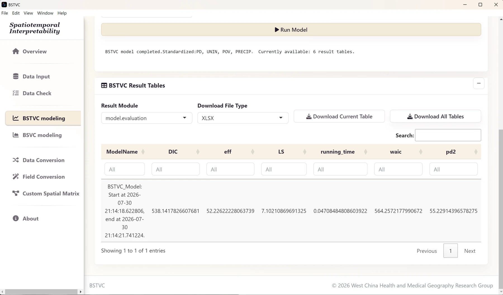
5. Read time, space, and contribution
Count-model coefficients describe associations on the log scale of the modeled mean. They are not directly changes in the number of cases. Keep credible intervals in view when discussing direction, magnitude, and variation. Standardization changes a predictor’s interpretation from one raw unit to a standardized unit.
Plot temporal means with both 95% and 50% credible bands. If you add a LOESS curve for visual guidance, retain the original annual points; that smoother is a display layer rather than a new posterior estimate. For maps, join spatial coefficients using GEOID.
As with the binary case, the documented Poisson desktop model does not supply the residual component needed for an overall model explainable percentage. Interpret STVPI as the available relative factor contribution, within the model’s scope.
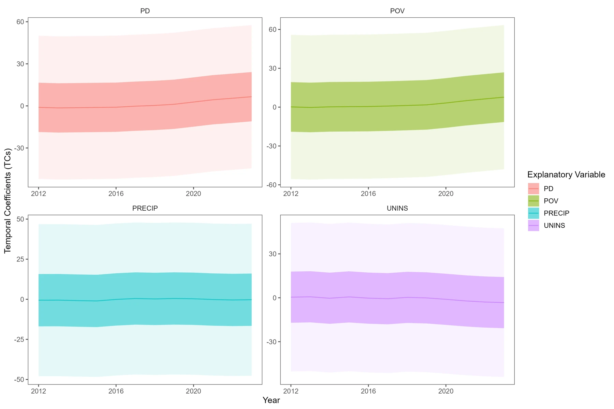
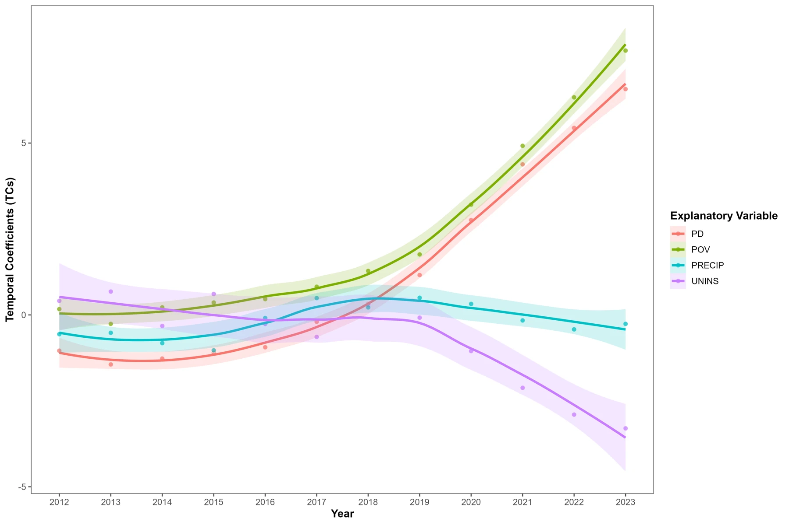
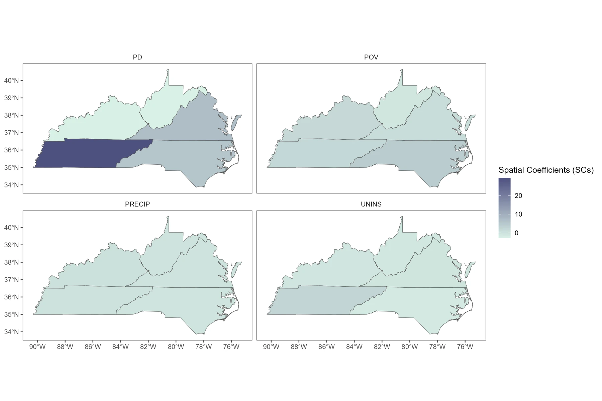
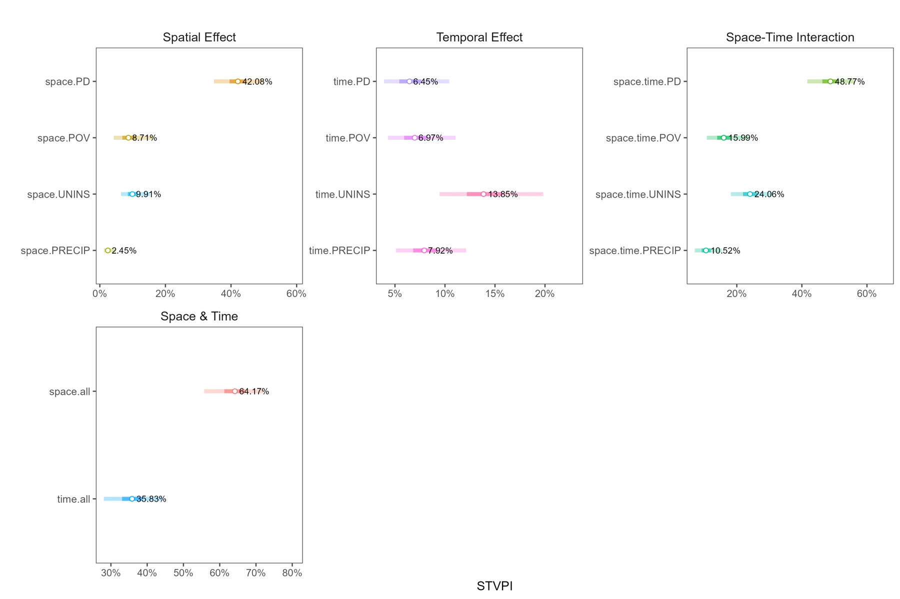
6. Assess count predictions
Inspect local.prediction and confirm that predict_y is a predicted mean on the count scale. A mean prediction can be fractional; it is not a newly observed integer case count. If an export contains only a linear predictor, confirm the appropriate transformation before using count metrics.
Compare predictions with observed COUNT values. Mean absolute error (MAE) describes the average absolute error in case counts. Mean Poisson deviance respects the count response scale; define the zero-count contribution correctly. A deviance-based pseudo-R² compares that deviance to a mean-only reference and can be negative.
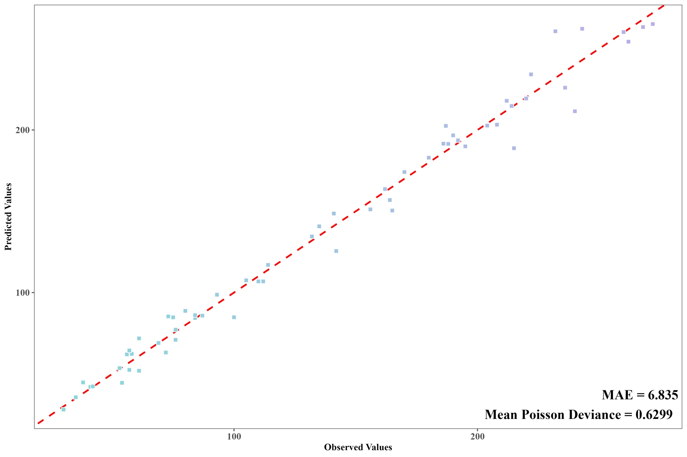
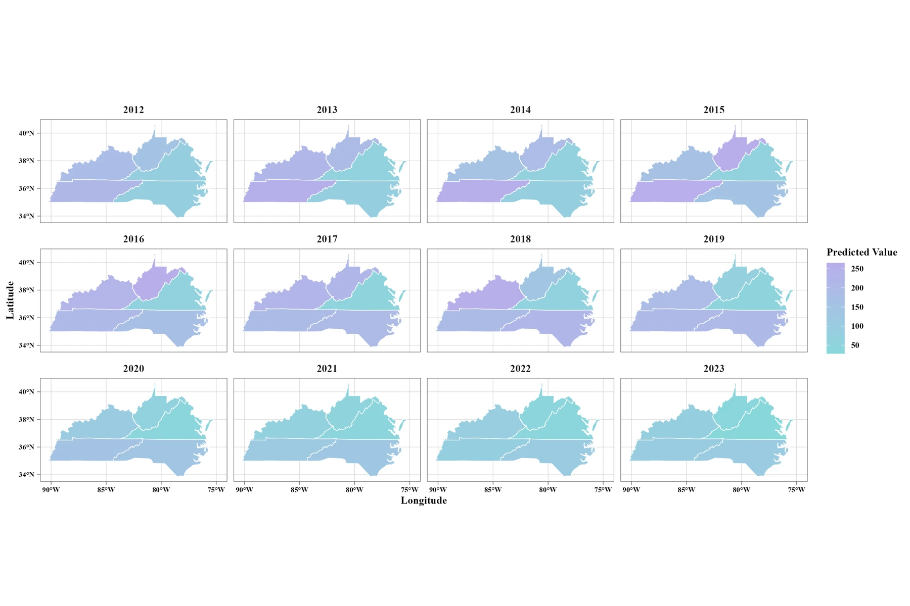
7. Finish the case and keep your evidence
Save the checked panel, model settings, software version, map components, workbook, and any derived plots in an output folder. Read Understand results before drafting conclusions, and use R visualization for the plots above. Your next case can be continuous HALE or binary COVID-19.